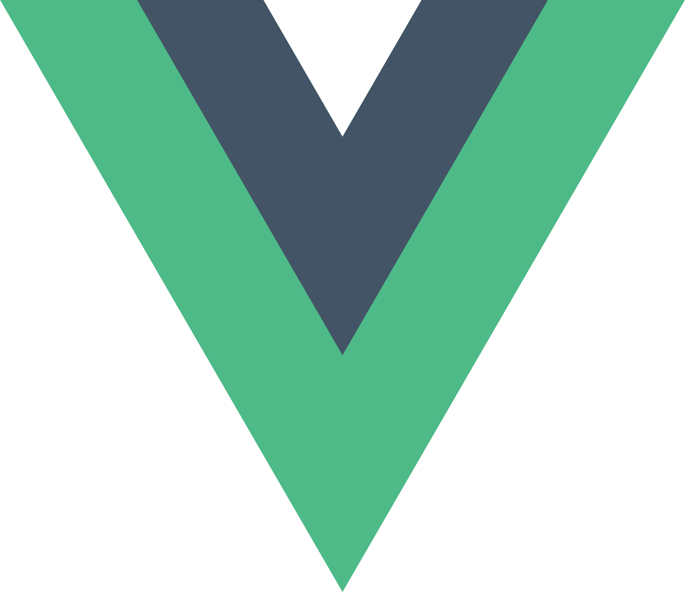
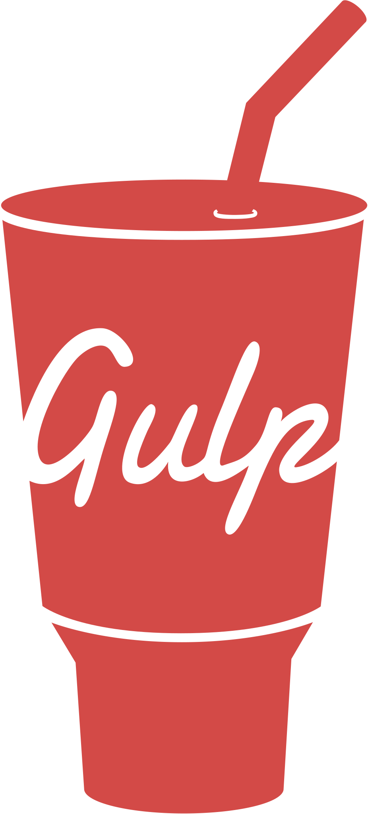
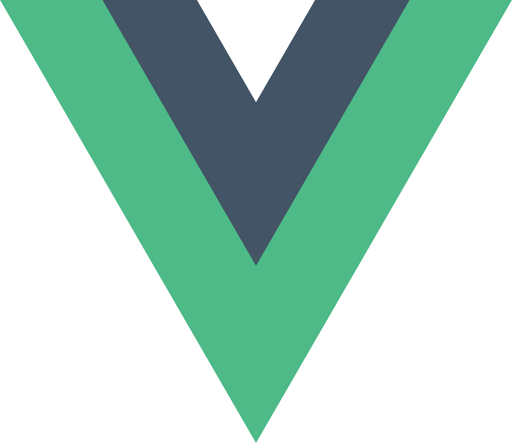
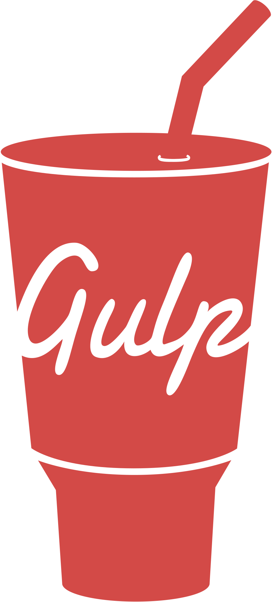

contact
Mes projets
My projects
Zohaib Muhammad a.k.a SvipersMhd
Front-End Développeur Web jnr
Hey! Je suis Zohaib Muhammad, un développeur front-end junior passionné par la création de sites web esthétiques et fonctionnels. Je suis constamment à la recherche de nouvelles technologies à apprendre. Mon objectif est de devenir un développeur front-end expérimenté et de travailler sur des projets qui ont un impact positif sur les utilisateurs finaux.
Je maîtrise les langages HTML, CSS et JavaScript, ainsi que la création de thèmes WordPress. J'ai également travaillé avec des outils tels que Gulp pour l'automatisation des tâches de développement. Récemment, j'ai commencé à explorer le framework Vue.js pour développer des applications frontales plus complexes. Je suis toujours motivé pour apprendre de nouvelles technologies et améliorer mes compétences pour créer des sites web de haute qualité et des expériences utilisateur optimales.
Hey! I'm Zohaib Muhammad, a junior front-end developer passionate about creating aesthetic and functional websites. I am constantly on the lookout for new technologies to learn. My goal is to become an experienced front-end developer and work on projects that have a positive impact on end-users.
I am proficient in HTML, CSS, and JavaScript languages, as well as creating WordPress themes. I have also worked with tools such as Gulp for automating development tasks. Recently, I started exploring the Vue.js framework for developing more complex front-end applications. I am always motivated to learn new technologies and improve my skills to create high-quality websites and optimal user experiences.
Skills :


 



Mes projets
My projects
To do list
To do list, fait en html, css, js, animée avec gsap
To-do list, made with HTML, CSS, JS, animated using GSAP.